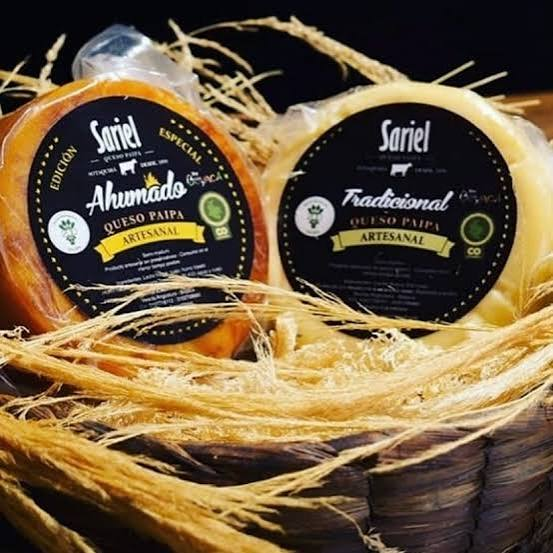
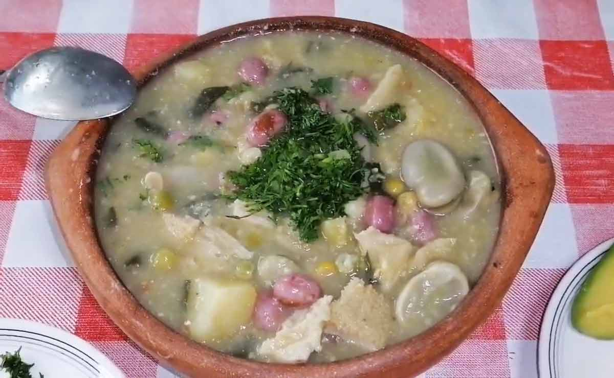
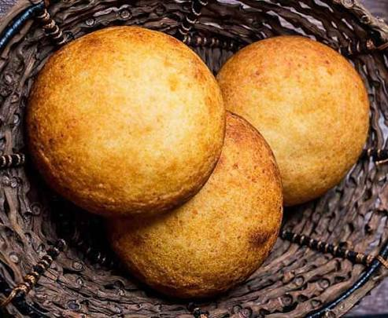

Producto tradicional de Paipa, reconocido por su sabor madurado y su textura firme.
Recetas campesinas, productos locales y tradiciones para compartir.

Producto tradicional de Paipa, reconocido por su sabor madurado y su textura firme.

Ingredientes frescos y preparaciones abundantes nacidas en los municipios boyacenses.

Sopa tradicional preparada con maíz, trigo o cebada y productos de la región.

Preparación tradicional con maíz, carnes y verduras de la cocina campesina.

Panecillos suaves elaborados con queso y disfrutados en desayunos y meriendas.

Embutido tradicional con especias y sabor casero, típico de las plazas y restaurantes de Boyacá.

Arepa de maíz con queso, un acompañamiento esencial de la mesa boyacense.
La gastronomía también es una forma de conocer Boyacá.
Ingredientes frescos cultivados en las montañas boyacenses.
Sabores transmitidos de generación en generación.
Platos que reúnen a las familias alrededor de la mesa.